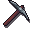
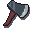
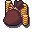
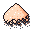
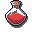
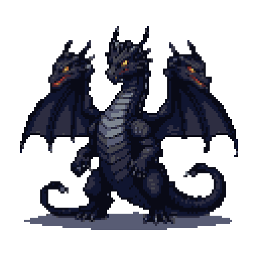
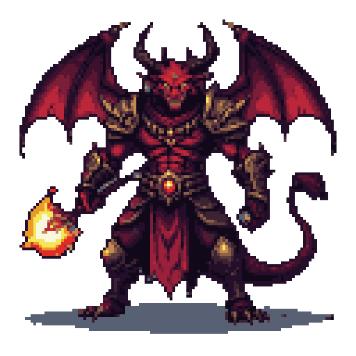
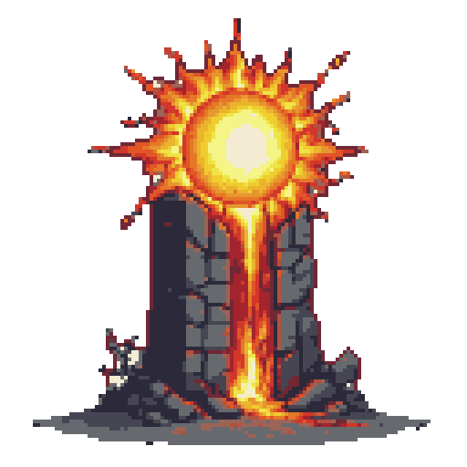
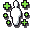

Skills
Idle Fantasy has 23 skills split across four categories: gathering, crafting, support, and combat.
| Skill | Category | Description |
|---|---|---|
 Mining |
gathering | Extract ores and gems from the earth. |
| Fishing | gathering | Catch fish and aquatic creatures. |
 Woodcutting |
gathering | Chop trees for logs. |
 Farming Farming |
gathering | Plant seeds and harvest crops. |
 Firemaking Firemaking |
crafting | Burn logs for XP. Produces ashes for Prayer. |
| Agility | support | Reduces session time across all skills (60→40 min at level 99). |
 Thieving Thieving |
gathering | Pickpocket NPCs in the Town for coins and loot. |
 Mercantile |
support | Send trade caravans and explore skilling expeditions for lore and dungeon unlocks. |
 Smithing Smithing |
crafting | Smelt ores into bars and forge equipment. |
 Cooking Cooking |
crafting | Cook raw food to restore HP in combat. |
 Fletching Fletching |
crafting | Craft bows and arrows. |
| Crafting | crafting | Make jewellery and other items. |
 Runecrafting |
crafting | Craft runes from rune essence. |
 Herblore |
crafting | Brew potions for combat stat boosts. |
| Construction | crafting | Build furniture used to upgrade town buildings (Inn, Guild Hall, Church). |
 Attack |
combat | Increases melee accuracy. |
 Strength |
combat | Increases max melee damage. |
| Defense | combat | Reduces damage taken. |
| Ranged | combat | Attack from a distance with a bow. |
| Magic | combat | Cast spells using runes. |
 Hitpoints |
combat | Total health. Increases with combat. |
 Prayer |
support | Bury bones to unlock combat prayers. |
 Slayer Slayer |
combat | Receive tasks from the Slayer Master to kill specific enemies for bonus XP and points. |
All skills cap at level 99.
Prestige
Once a skill reaches level 99 you can prestige it. Prestiging resets the skill back to level 1 and awards 3 prestige points to spend in that skill's upgrade tree. Equipment that no longer meets its requirements after the reset is swapped for the best valid replacement you own. The skill also gets a 48 hour 2x XP boost after prestiging, so the climb back up is fast.
Every skill has its own tree with several upgrade paths (XP, yield, tool efficiency, and skill-specific specials). Tiers within a path must be bought in order, and tiers beyond the next unowned one stay hidden in-game until you reach them. A skill can be prestiged repeatedly until you have earned enough points to buy every upgrade available to your race.
Spent points can be refunded at any time with a respec, which returns their full cost (24 hour cooldown per skill).
Ironman characters can prestige too, but their race is permanently locked.
Prestige stars earned before v1.14.0 were converted in a one-time migration worth 3 points per star.
Session time reductions may also come from other sources such as the Chronos Spire building
Racial upgrades
Some upgrades are exclusive to one race (or in rare cases two) and can never be bought by anyone else. In-game they show up with a red lock and a hidden effect; the tables below spoil what each race gets, so stop reading if you would rather discover them.
Human
| Skill | Upgrade | Cost (points) |
|---|---|---|
| Mining | +40% XP in this skill | 4 |
| Fishing | +40% XP in this skill | 4 |
| Woodcutting | +40% XP in this skill | 4 |
| Farming | +40% XP in this skill | 4 |
| Agility | +40% XP in this skill | 4 |
| Thieving | +40% XP in this skill | 4 |
| Smithing | +40% XP in this skill | 4 |
| Cooking | +40% XP in this skill | 4 |
| Fletching | +40% XP in this skill | 4 |
| Crafting | +40% XP in this skill | 4 |
| Firemaking | +40% XP in this skill | 4 |
| Runecrafting | +40% XP in this skill | 4 |
| Herblore | +40% XP in this skill | 4 |
| Construction | +40% XP in this skill | 4 |
| Attack | +40% XP in this skill | 4 |
| Strength | +40% XP in this skill | 4 |
| Defense | +40% XP in this skill | 4 |
| Ranged | +40% XP in this skill | 4 |
| Magic | +40% XP in this skill | 4 |
| Hitpoints | +40% XP in this skill | 4 |
| Prayer | +40% XP in this skill | 4 |
| Mercantile | +40% XP in this skill | 4 |
| Slayer | +40% XP in this skill | 4 |
Elf
| Skill | Upgrade | Cost (points) |
|---|---|---|
| Fishing | Tool efficiency +25% | 3 |
| Fishing | Tool efficiency +30% | 4 |
| Thieving | Pickpocket success chance +5% | 3 |
| Thieving | Pickpocket success chance +10% | 4 |
| Crafting | 25% of crafting materials are refunded | 3 |
| Crafting | 30% of crafting materials are refunded | 4 |
| Ranged | +25% chance to recover spent arrows and runes after combat | 3 |
| Ranged | +35% chance to recover spent arrows and runes after combat | 4 |
| Ranged | Unlocks the Elven Shortbow fletching recipe | 2 |
| Ranged | Unlocks the Elven Longbow fletching recipe | 4 |
| Prayer | Church blessings last 45% longer | 3 |
| Prayer | Church blessings last 55% longer | 4 |
Dwarf
| Skill | Upgrade | Cost (points) |
|---|---|---|
| Mining | +35% items from this skill's sessions | 3 |
| Mining | +40% items from this skill's sessions | 4 |
| Smithing | 25% of crafting materials are refunded | 3 |
| Smithing | 30% of crafting materials are refunded | 4 |
| Firemaking | Flow-state: +1% yield per interval of continuous activity, up to +100% | 3 |
| Firemaking | Flow-state interval shortened by 10 minutes | 4 |
| Construction | Town building upgrades cost 9% less | 3 |
| Construction | Town building upgrades cost 12% less | 4 |
| Mercantile | Shop sell prices +9% | 3 |
| Mercantile | Shop sell prices +12% | 4 |
Orc
| Skill | Upgrade | Cost (points) |
|---|---|---|
| Cooking | Food heals +25% more in combat | 3 |
| Cooking | Food heals +30% more in combat | 4 |
| Attack | +18 effective levels in combat | 3 |
| Attack | +23 effective levels in combat | 4 |
| Strength | +18 effective levels in combat | 3 |
| Strength | +23 effective levels in combat | 4 |
| Strength | 5% chance to strike a second melee hit | 1 |
| Strength | 10% chance to strike a second melee hit | 2 |
| Strength | 15% chance to strike a second melee hit | 4 |
| Hitpoints | Keep an extra 15% of XP and loot when defeated | 3 |
| Hitpoints | Keep an extra 30% of XP and loot when defeated | 4 |
| Slayer | Slayer task points +45% | 3 |
| Slayer | Slayer task points +60% | 4 |
Gnome
| Skill | Upgrade | Cost (points) |
|---|---|---|
| Fishing | Pet boosts for this skill are 25% stronger | 3 |
| Fishing | Pet boosts for this skill are 50% stronger | 4 |
| Farming | The rotation bonus applies to every crop, no rotation needed | 5 |
| Farming | +10% items from this skill's sessions (shared with Halfling) | 3 |
| Fletching | +10% chance to recover spent arrows and runes after combat | 3 |
| Fletching | +20% chance to recover spent arrows and runes after combat | 4 |
| Firemaking | Flow-state: +1% yield per interval of continuous activity, up to +100% | 3 |
| Firemaking | Flow-state interval shortened by 10 minutes | 4 |
| Construction | Town building upgrades cost 2% less | 3 |
| Construction | +1 session queue slot | 5 |
| Prayer | Church blessings cost 10% fewer bones | 3 |
| Prayer | Church blessings cost 20% fewer bones | 4 |
Halfling
| Skill | Upgrade | Cost (points) |
|---|---|---|
| Fishing | Flow-state: +1.5% yield per interval of continuous activity, up to +100% | 3 |
| Fishing | Flow-state interval shortened by 10 minutes | 4 |
| Woodcutting | Pet boosts for this skill are 25% stronger | 3 |
| Woodcutting | Pet boosts for this skill are 50% stronger | 4 |
| Farming | +10% items from this skill's sessions (shared with Gnome) | 3 |
| Farming | +15% items from this skill's sessions | 4 |
| Cooking | +10% items from this skill's sessions | 3 |
| Cooking | +15% items from this skill's sessions | 4 |
| Construction | 10% of crafting materials are refunded | 3 |
| Construction | 15% of crafting materials are refunded | 4 |